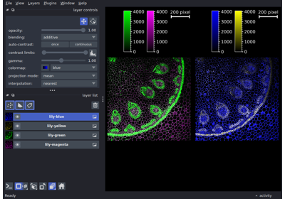

Examples#
Examples of napari usage.
Each example page includes downloads for both the source .py file and a
generated Jupyter notebook. If you download the Python script, you can run it
with napari path/to/my_example.py or drag the .py file onto a running
napari viewer to execute it there. Some examples may require additional
dependencies beyond napari itself, so be sure to check the example’s source
code for any additional requirements if you see an error when trying to run it.
Check out Jupyter notebook usage for more details on using napari in Jupyter
notebooks.
Use the tag index below to browse examples by topic, or jump straight into the gallery grid.
Note
If you want to submit a new example to this gallery, check out our contribution guide!

Colorbars and auto-tiling of overlays in grid mode
Heart with multiple annotations
Image warping with mouse event callbacks
Interactive Control Over Parallel Computations
Lat/Lon data with background map
Launch napari and display an image
Layer Bounding Box (Border) Overlay
Method to get napari style in magicgui based windows
Set multiscale resolution level
Surface with multiple textures
Surface with texture and vertex_colors
Visualizing optical flow in napari
nD multiscale image non-uniform